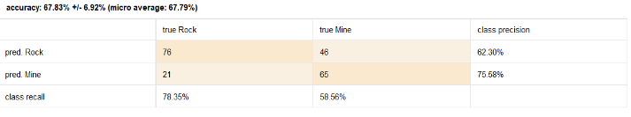
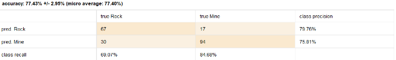
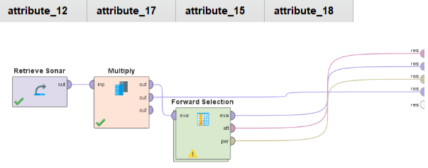
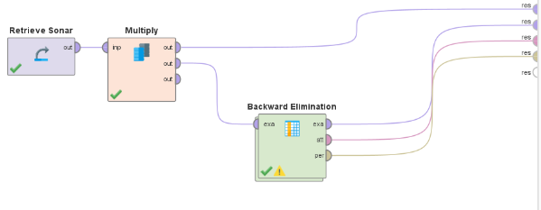
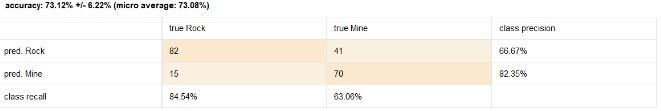

TA 10
Exercise 1
The precision table without any feature selection:
Exercise 2
Forward selection was used to work with the most important attributes according to the method. The following data was obtained:
The algorithm selected the following attributes:
Exercise 3 - Backward Selection
The following data was obtained:
